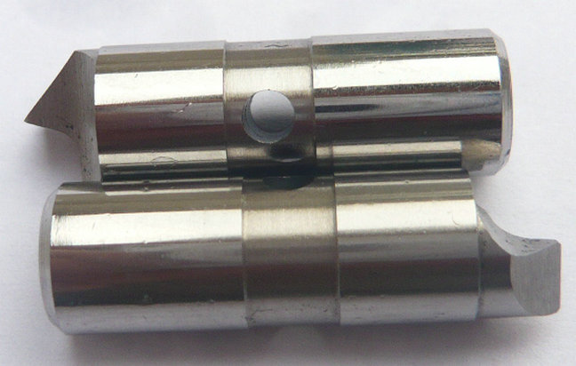
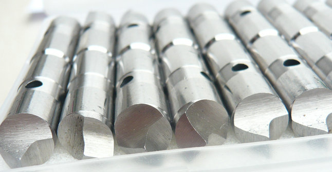
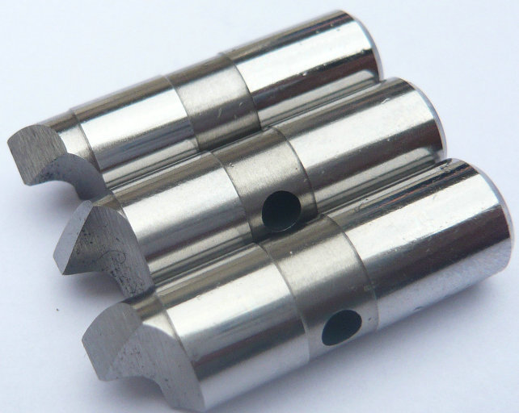
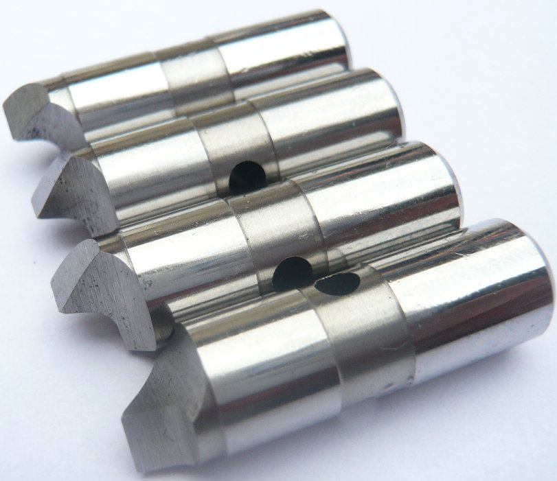

YDTech® OEM: Mitnehmerbolzen mit Meißelkante in einem Stirnseitenmitnehmer für schwere Zerspanung!
Lieferant von Meißelkanten-Antriebsstifte für antreiben Drehmaschinen-Stirnseitenmitnehmer.


Unsere Meißelkanten werden hochpräzisionsgeschliffen – mit definiertem Freiwinkel und kontrollierter Kantenmikrogeometrie. Dadurch erreichen wir gleichbleibende Eindringtiefen und vermeiden Mikrorisse im Werkstück.
Wir sind ein spezialisierter chinesischer Hersteller mit langjähriger Erfahrung in der Fertigung von Meißelkanten-Mitnehmerbolzen für nahezu alle gängigen Stirnseitenmitnehmer-Systeme .


Ein Meißelkanten-Mitnehmerbolzen (auch als Mitnehmerbolzen mit Meißelkante bezeichnet) verfügt an seiner Stirnseite über eine scharfkantige, meißelartige Geometrie. Diese Kante dringt bei Kontakt mit dem Werkstück leicht in die Oberfläche ein – nicht zerstörend, aber formschlüssig genug, um auch bei schwierigen Bedingungen ein Durchrutschen zu verhindern.
Individuelle Meißelgeometrie – Je nach Werkstoff (weicher Stahl, Guss, Titan, gehärtete Schichten) legen wir Kantenwinkel, Fasenbreite und Mikrohärte fest. Hochpräzises Schleifen – Die Meißelkante wird auf modernsten CNC-Schleifmaschinen mit optischer Vermessung gefertigt. Toleranzen im µm-Bereich sind Standard.
Optimierte Wärmebehandlung – Durch Vakuumhärten erzielen wir eine Härte von 58–62 HRC an der Kante bei gleichzeitig zähem Kern. Das verhindert Ausbrüche auch bei stoßartiger Belastung. 100% Maß- und Funktionsprüfung – Jeder Bolzen wird auf Kantengeometrie, Härte und Passung geprüft.
Schnelle Lieferzeiten – Muster oft innerhalb einer Woche, Serien termingerecht. Technische Beratung auf Augenhöhe – Wir analysieren Ihre Zeichnung und empfehlen die optimale Meißelgeometrie.
Höhere Drehmomentübertragung bei gleicher Anpresskraft, Verbesserte Rundlaufgenauigkeit durch definierte Punktkontaktverhältnisse. Geringere Schädigung der Werkstückstirnfläche im Vergleich zu aggressiven Zahnsystemen. Einsetzbar auf gehärteten oder vorbearbeiteten Flächen ohne aufwendige Vorbereitung.
- home
- home
- products
- contact
- equipments
- offset driving parts
- half offset drive pins
- central driver parts
- standard/ Fixed driving pins
- Lowered drive parts
- clockwise driver pins
- counterclockwise driving parts
- full width drive pins
- Lasting driver parts
- chisel-edged driving pins
- floating drive parts
- power-operated driver pins
- hydraulic driving parts
- mechanical drive pins
- movable driver parts
- fixed driving pins
- carbide driver pins
- tool steel S7 driving parts
- changeable pins
- face drive pins